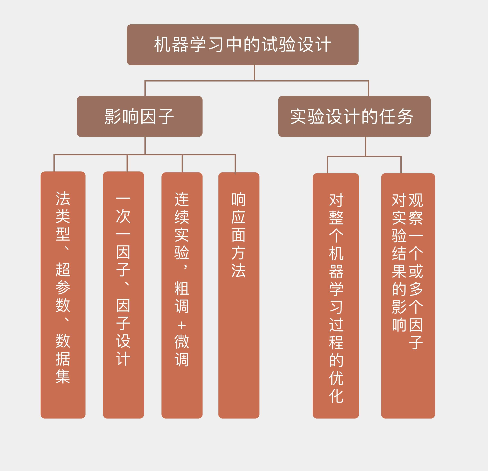

- 00 开篇词 打通修炼机器学习的任督二脉.md.html
- 01 频率视角下的机器学习.md.html
- 02 贝叶斯视角下的机器学习.md.html
- 03 学什么与怎么学.md.html
- 04 计算学习理论.md.html
- 05 模型的分类方式.md.html
- 06 模型的设计准则.md.html
- 07 模型的验证方法.md.html
- 08 模型的评估指标.md.html
- 09 实验设计.md.html
- 10 特征预处理.md.html
- 11 基础线性回归：一元与多元.md.html
- 12 正则化处理：收缩方法与边际化.md.html
- 13 线性降维：主成分的使用.md.html
- 14 非线性降维：流形学习.md.html
- 15 从回归到分类：联系函数与降维.md.html
- 16 建模非正态分布：广义线性模型.md.html
- 17 几何角度看分类：支持向量机.md.html
- 18 从全局到局部：核技巧.md.html
- 19 非参数化的局部模型：K近邻.md.html
- 20 基于距离的学习：聚类与度量学习.md.html
- 21 基函数扩展：属性的非线性化.md.html
- 22 自适应的基函数：神经网络.md.html
- 23 层次化的神经网络：深度学习.md.html
- 24 深度编解码：表示学习.md.html
- 25 基于特征的区域划分：树模型.md.html
- 26 集成化处理：Boosting与Bagging.md.html
- 27 万能模型：梯度提升与随机森林.md.html
- 28 最简单的概率图：朴素贝叶斯.md.html
- 29 有向图模型：贝叶斯网络.md.html
- 30 无向图模型：马尔可夫随机场.md.html
- 31 建模连续分布：高斯网络.md.html
- 32 从有限到无限：高斯过程.md.html
- 33 序列化建模：隐马尔可夫模型.md.html
- 34 连续序列化模型：线性动态系统.md.html
- 35 精确推断：变量消除及其拓展.md.html
- 36 确定近似推断：变分贝叶斯.md.html
- 37 随机近似推断：MCMC.md.html
- 38 完备数据下的参数学习：有向图与无向图.md.html
- 39 隐变量下的参数学习：EM方法与混合模型.md.html
- 40 结构学习：基于约束与基于评分.md.html
- 如何成为机器学习工程师？.md.html
- 总结课 机器学习的模型体系.md.html
- 总结课 贝叶斯学习的模型体系.md.html
- 结课 终有一天，你将为今天的付出骄傲.md.html
- 捐赠
09 实验设计
和其他科学学科一样，机器学习也会借助实验获取关于目标的信息。宏观来看，实验的设计与分析正在逐渐脱离具体问题的限定，有成为一门独立学科的趋势。不管是物理学还是经济学，对实验的处理都存在着一些共性的准则。在本篇文章中，我就和你简单谈谈机器学习中有关实验设计与分析的一些原则性问题。
在讨论实验设计之前，先得知道实验设计到底是怎么回事。实验设计（experimental design），或者叫设计实验（designed experiment），指的是在实验之前制定详细的实验计划，确定实验目标并选择待研究的过程因子（process factor）。精心挑选的实验设计可以在给定资源的条件下使实验获得的信息量最大化，让实验结果最大程度地接近真实结果。实验设计需要人为改变一个或多个过程因子，以观察这种变化对一个或多个因变量的影响，其目的是分析获得的数据以产生有效和客观的结论。
在现有的关于机器学习的文献中，对设计实验部分的讨论似乎并不多见，其原因在于这部分工作已经由他人代劳，而不需要放在机器学习的应用层面来解决。在各种各样的图像识别竞赛中，无论是训练集还是测试集都是预先给定的，其中的每张图片都有精确的标注。看起来，设计实验似乎是一项蓝领工作，它被处理高大上算法的白领工作给人为地屏蔽了。可真实情况是什么呢？通过人工数据训练出来的算法，在真实世界中的行为可能完全不同，从“人工智能”变成“人工智障”只是捅破一层窗户纸这么简单。
设计实验绝非简单的蓝领工作，它甚至比机器学习本身更加注重策略的作用。机器学习的目标是模拟数据的内在生成机制，取得较低的泛化误差和较强的预测精度。对数据生成机制的学习是建立在足量数据的基础上的，因此机器学习需要的数据多多益善，不会对数据提出这样那样的要求。即使是类别不平衡或者属性有缺失值，机器学习对这些非完美的数据也会来者不拒。这就像一个给啥吃啥的傻小子，只要能填饱肚子就无欲无求了。
相比之下，在设计实验中，数据都是经过精挑细选的，最重要的特性就是平衡（balance）。一般来说，“平衡”意味着对于数据来说，每个特征可能的取值个数都是相同的，而对于特征来说，每个取值上的数据比例也是要近似相同的。这种平衡保证了每个特征对结果都会产生同等程度的影响，从而回避了特征和因子之间的偏好关系。这就像个讲究生活品质的人，不仅要填饱肚子，还要通过口味和营养的搭配吃得美味、吃得健康。这在实验中就表现为精确衡量不同因子对实验结果的影响。
设计实验要完成的任务是对整个机器学习过程的优化。影响作为一个过程，而不单单是一个模型的机器学习的因子是多种多样的，其中最基本的因子就是选用的模型形式。当解决一个分类问题时，主成分分析（通常作为预处理方法出现）、\(K\)近邻和神经网络都是可用的模型。当模型确定后，模型的超参数（hyperparameter）就是下一个可控因素，主成分分析中主成分的个数\(d\)、\(K\)近邻算法中\(K\)的取值，神经网络中隐藏层的数目\(n\)都属于超参数。超参数会对模型的性能和复杂度产生直接的影响，在不同的超参数配置下，模型训练所得到的参数和性能也会有所区别。
实验中因子的设置取决于实验的目的。如果想要比较不同算法在同一个问题上的性能，算法的类别就是因子；如果要测试固定的算法在不同问题上的性能，算法的超参数就是因子；如果要用算法来区别数据集的数据质量，那么不同的数据集也是因子。设计实验时，要将发生影响的所有因子全部纳入考虑范围并加以调节，从而实现对学习过程的系统性优化。
当实验中的因子数目比较多时，如何唯一地确定单个因子的影响就需要一些技巧。你一定听说过控制变量法，这是最简单的实验设计技法之一，它通过将其余变量设置为固定值来观察单一因素的影响效果，以及其背后的因果关系。在机器学习中，这种方法被称为一次一因子（one factor at a time），它首先为所有因子都设定一个基线值，再在其他因子保持在基线水平的前提下令单个因子波动，观察它对学习性能的影响。
在应用控制变量变量法时需要注意的是，它暗含着一个较强的假设，就是不同因子之间相互独立，互不影响。这个假设在实际的学习任务中显然并不总是成立的，埃塞姆·阿帕丁（ Ethem Alpaydin）在他的《机器学习导论》（Introduction to Machine Learning, 3rd Edition）中提到，在主成分分析的预处理与\(K\)近邻分类的级联算法中，主成分数目的每个选择都给后面的\(K\)近邻定义出一个全新的输入空间，这会使\(K\)近邻的最优超参数出现变化——在10维输入中计算出的最优近邻数目未必适用于15维的输入。
如果在每次实验中不是控制单个因子，而是让所有的因子一起变化来发现它们之间的协同关系，这就是因子设计（factorial design）的方法。因子设计关注的是不同因子之间系统化的变化对学习效果的影响，它的一个特例是全因子实验（full factorial experiment），也叫完全交叉设计（fully crossed design）。在全因子实验中，每个因子都有有限个离散的取值，实验则覆盖了所有因子所有取值的所有可能组合。如果总共有3个因子，每个因子的取值数目分别是3/4/5，那么全因子实验的执行次数就是\(3 \\times 4 \\times 5 = 60\)。
全因子实验不仅能够研究每个因子对因变量的影响，还能发现因子之间相互作用对因变量的影响，它可以进一步被看成是连续实验（sequential experimentation）的一个阶段。在待分析的因子数目较多时，连续实验体现出来的就是“粗调 + 微调”的处理方式。它首先执行全因子实验，但只给每个因子赋予较少的可能取值。这种广撒网的做法能够评判所有因子的重要程度，确定哪些是对学习结果影响较大的活跃因子并保留下来，剩下的不活跃的因子就会被放弃。接下来，连续实验会聚焦活跃因子，通过增加取值数目并进行精细的微调来精确刻画它们之间的关系，以及对因变量的影响方式，进而优化学习的设置。
在对筛选出的少量因子进行微调时，可以使用响应面方法（response surface methodology）来降低计算开销。微调的目的是找到最优的因子取值，在不可能对所有取值都计算出性能指标的情况下，通过插值的方法来拟合出因子和性能之间的响应面就是一种更容易操作的办法。在得到的响应面上寻找最值，找到的就是最优的因子取值。
响应面通常被设定为二次曲面，用来拟合初始曲面的数据通常取在因子的基线附近。在初始曲面上找到的因子最优值被应用到学习模型之中，得到的结果作为一个新样本被添加到初始曲面里面，然后继续对响应曲面进行拟合和优化，直到得到的最优结果没有明显的改进为止。
响应曲面其实可以看成一种替代模型。替代模型（surrogate model）是对真实模型的逼近，以数据驱动的自底向上的方法构建，目标是尽可能地模拟真实模型的行为。如果机器学习中的因子较多的话，它们之间的关系可能就是无法用解析式来描述的复杂关系，替代模型就是对这种复杂关系的拟合，就像机器学习训练模型来拟合输入特征和输出结果之间的关系那样。
今天我和你分享了机器学习中实验设计的一些基本原则，其要点如下：
实验设计的任务是观察一个或多个因子对实验结果的影响；
机器学习中，实验设计中的因子包括算法类型、超参数、数据集等；
连续实验可以用来评估多个因子对实验的影响；
响应面方法通过二次曲面的拟合寻找可变因子的最佳取值。
本篇中提到的实验设计类似于机器学习中的模型调参，只不过调参调的是模型内部的参数，而实验设计调的是模型外部的因子。在实际中通常没有得到应有的重视。那么在机器学习的实践中，你是否专门关注过这个过程，又或者掉进过实验设计的坑里，还是历练出什么独门绝技呢？
欢迎分享你的观点。

© 2019 - 2023 Liangliang Lee. Powered by gin and hexo-theme-book.